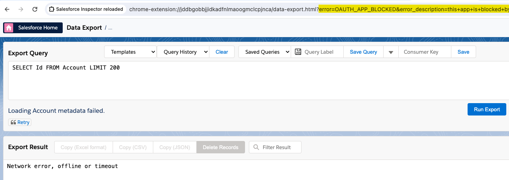

Troubleshooting¶
Common issues that may occurs¶
Blank popup¶
You've just installed Salesforce Inspector Reloaded and ... the popup is blank 😥 Make sure that third party cookies are enabled in your browser:
Salesforce Inspector Reloaded is not working anymore¶
One of the cause can be a domain update (Hyperforce migration, MyDomain change ...). What you need to do is to delete the sid cookie (and website associated cookies if sid did not worked).
Unauthorized or Network error¶
If your are getting an "Unauthorized" or "Network error" while online, it is likely caused by an authentication issue. To troubleshoot, clean Local Storage, and then try to reauthenticate in the extension, by clicking the "Click here to generate new token" button, or the "Generate Access Token" button.
When redirected to the "Data Export" tab at the end of the OAuth flow, check the URL parameters in your address bar: if it contains error=OAUTH_APP_BLOCKED&error_description=this+app+is+blocked+by+admin this means that your org has API Access Control enabled. In that situation, you must ask your Salesforce admin to install and allow the Salesforce Inspector Connected App before you can use it.

Generate new token error¶
If you did not enabled 'API Access Control' and continuously see the banner generate token.
You may have seen this message because of an expired token, and since this was the only available option clicked on 'Generate new Token'.
Delete the generated token from the Option page
Or try to run this code in chrome dev console, after inspecting the extension' popup code:
let tokens = Object.keys(localStorage).filter((localKey) =>
localKey.endsWith("access_token")
);
tokens.forEach((element) => localStorage.removeItem(element));
Still facing the issue ? Try to connect to your org in an anonymous window (make sure you allowed the extension to run in private mode). If the error disappeared, clear site data to solve the issue in normal navigation.
CSV Export encoding issues in Excel¶
If you experience recent issues when opening exported CSV files in Excel, you can disable the "Use BOM for CSV export" option in the extension settings. This option adds a UTF-8 Byte Order Mark (BOM) to the beginning of the file, which helps Excel correctly identify the encoding for non latin characters.
Managed Application Installation Error¶
When installing the default connected app when API Access Control is enabled, if you face the error Managed Application Installation Error you may have an existing connected app named Salesforce Inspector reloaded.
Logging as incognito with ConnectedApp¶
If you use the standard Salesforce Inspector Reloaded's Connected App and click Generate New Token the LoginAs Incognito feature might stop working correctly. Instead of automatically logging you in, you'll be sent to a regular login screen.
This issue occurs because the default Salesforce Inspector Reloaded Connected App doesn't use the required scope for this feature.
As a workaround, you can create a custom External Client App (since the creation of Connected Apps is soon to be deprecated) as described in this article.
Deployment error: No package.xml found¶
Zip files downloaded from Salesforce (via Retrieve operations) contains a parent folder (typically named "unpackaged") that wraps all the metadata files including package.xml.
This error occurs when attempting to deploy a zip file where the package.xml file is not located at the root level of the zip archive and the singlePackage option is enabled.
How to solve it:
- Open deployment settings: Click the cog wheel icon.
- Single Package: Disable
Single Packageoption.
SDocs Template Editor interference¶
If you're experiencing issues with the Salesforce Docs (SDocs) Template Editor, where extension code appears to be injecting into IFrame windows (Template Body, Header, Footer), this is caused by a conflict with ad-blocking extensions (such as AdGuard AdBlocker).
Symptoms:
- Extension code appears in SDocs Template Editor iframes
- Template Body, Header, or Footer editors not working correctly
- Unexpected behavior in the SDocs interface
How to solve it:
- Disable any ad-blocking extensions (AdGuard AdBlocker etc.) on Salesforce sites
- You can keep Salesforce Inspector Reloaded enabled
Related issue: #908
Cache-related issues¶
The extension caches field permission information to optimize API usage. If you encounter issues related to cached data (such as incorrect field permissions or stale data), you can clear the cache.
Symptoms:
- User search queries fail with field permission errors
How to clear the cache:
- Using the Options page (recommended):
- Open the extension and click the "Options" button
- Navigate to the "User Experience" tab
- Find the "API cache period (days)" setting
- Click the "Clear Cache" button next to it
- A success message will confirm the cache has been cleared
After clearing the cache:
- The extension will fetch fresh field permission data on the next user search
- Queries will be rebuilt based on current field permissions
- Cache will be repopulated automatically with the new data
Newly Created Objects Not Appearing¶
If you create a new custom object in Salesforce and don't see it immediately in the extension's object list, this is likely due to caching.
Why this happens:
The extension caches the SObjects list to improve popup loading performance. This cache stores object metadata to avoid making API calls every time you open the popup.
Symptoms:
- A newly created custom object doesn't appear in the extension's object search
- Object appears in Salesforce Setup but not in the extension
How to solve it:
- Clear the SObjects List cache from the Objects tab (quickest when cache is enabled):
- Open the extension and go to the "Objects" tab
- Search for your new object name in the search field
- If no results appear, a "Clear Cache" button will be displayed
- Click the button to clear the cache and refresh the list
-
Your new object should appear after the refresh
-
Clear the SObjects List cache from Options (when the in-tab button is not shown, e.g. cache disabled):
- Open the extension and click the "Options" button
- Navigate to the "Cache" tab
- Find the "SObjects List Cache" setting
- Click the "Clear Cache" button next to it
-
A success message will confirm the cache has been cleared
-
Wait for cache expiration:
- The cache will automatically expire based on the configured duration (default: 8 hours when "Preload SObjects before popup opens" is enabled, 168 hours / 7 days when disabled)
- After expiration, the extension will fetch fresh data on the next popup open
Note: The "Clear Cache" button in the Objects tab is only displayed when SObjects List cache is enabled (Options > Cache tab) and a search returns no results. The extension caches SObjects per org. If you switch between orgs, the extension uses the cache for the current org. For more details on cache configuration, see SObjects List Cache Management in the how-to.